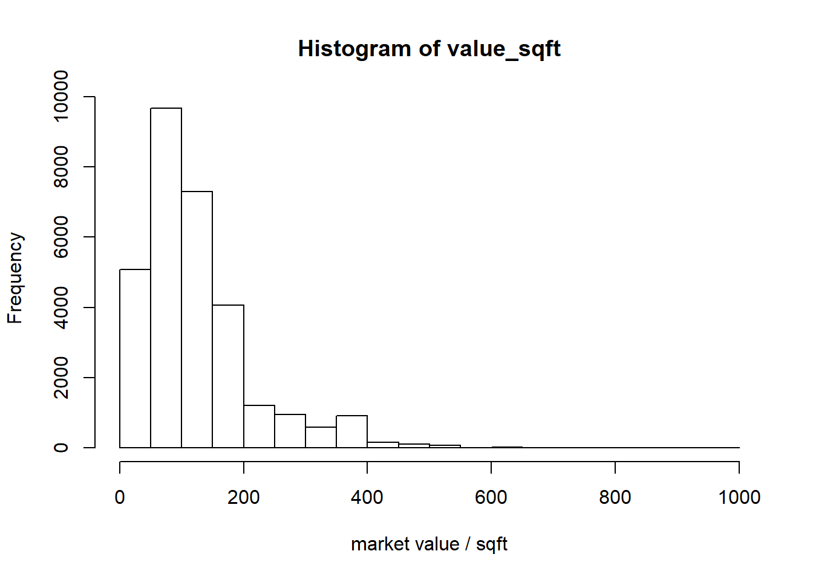
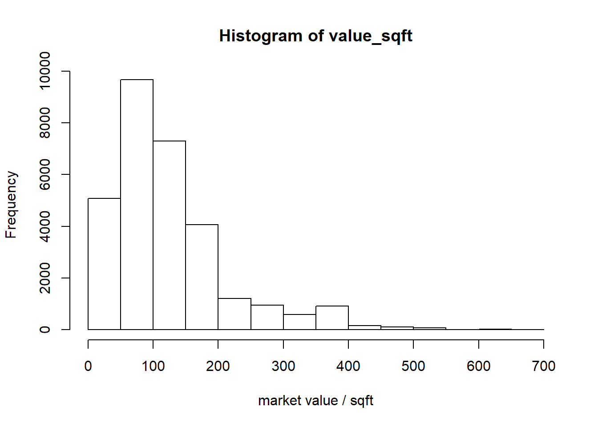
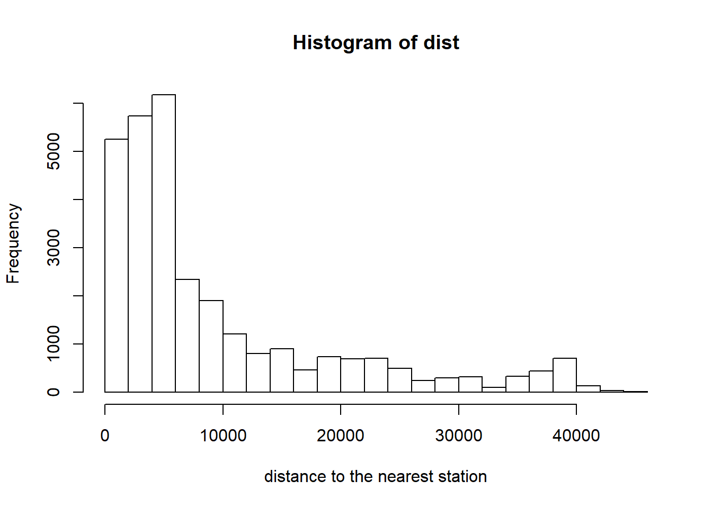
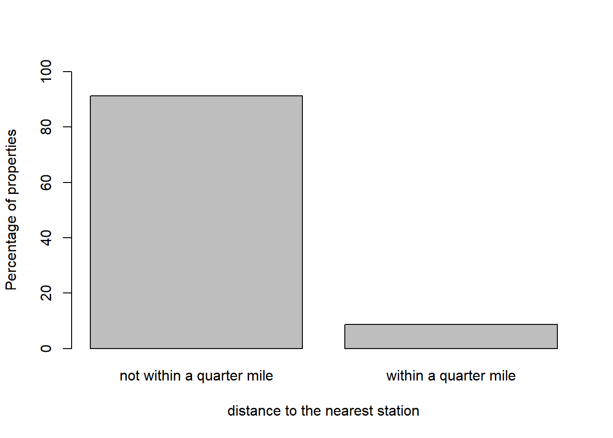
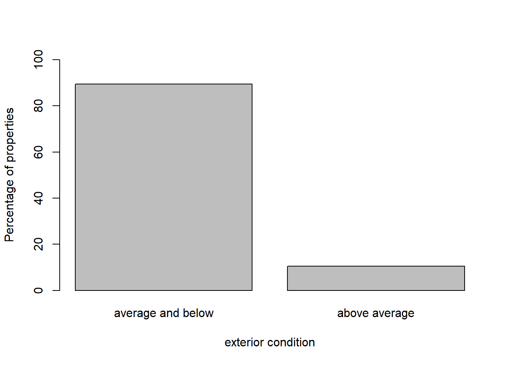
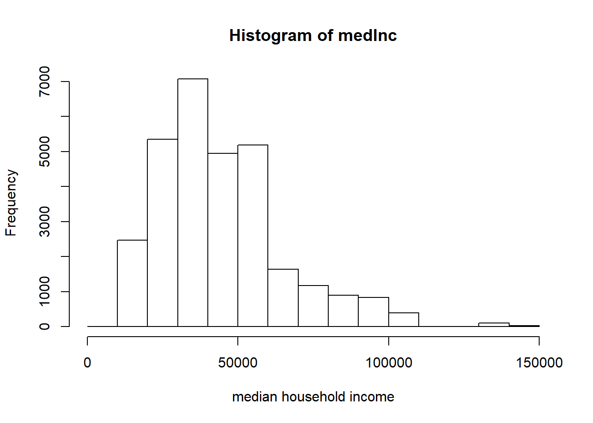
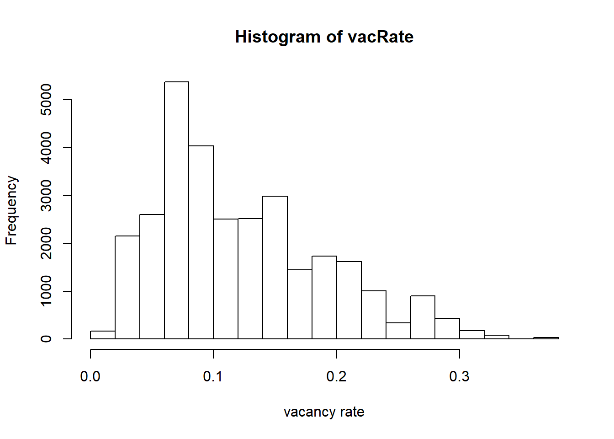

The major data set being used in this project is the Property Assessments dataset for Philadelphia, updated by Office of Property Assessment (OPA), City of Philadelphia in 2015 on OpenDataPhilly. This dataset contains physical characteristic, condition, and market value assessment information for every individual property in Philadelphia. Though commercial properties are included in this dataset, only the part of residential properties will be used for this project.
The data were collected in Tax Year 2014 by OPA, under the Actual Value Initiate (AVI), which was aimed for ensuring the current market values of all properties to be assessed fairly. The OPA considers size, age, location of property, condition, recent sales of similar properties when assessing the market value. Information concerning these factors comes from field inspections conducted by OPA, aerial photography, data from other City departments (such as permits and deeds), and property listings.
As mentioned in the introduction section, market value per square footage is the variable I will use as an indicator of willingness to pay. This is calculated based on the original Property Assessment dataset. Additional geospatial dataset of SEPTA city transit stations from OpenDataPhilly will be joined to the Property Assessments dataset through ArcMap, in order to obtain the information about distance to nearest SEPTA city transit stations for each residential property. Information about the age, and condition of properties in the Property Assessments dataset will also be used. Furthermore, variables representing quality of parent neighborhood for properties will be constructed in ArcMap based on the ACS data at census tract level downloaded from Social Explorer.
library(dplyr)
# load the prepared property assessment data set
dat<-read.csv("dat.csv")
dim(dat)## [1] 30131 7head(dat)## X value_sqft qrtmile dist condition medInc vacRate
## 1 1 35.16854 0 1395.384 0 17855 0.1557266
## 2 2 35.16854 0 1442.209 0 17855 0.1557266
## 3 3 35.16854 0 1453.951 0 17855 0.1557266
## 4 4 35.16854 0 1466.004 0 17855 0.1557266
## 5 5 10.00000 0 1477.807 0 17855 0.1557266
## 6 6 21.23596 0 1489.426 0 17855 0.1557266There are 30131 observations (residential properties) in total in the prepared data set.The table above displays the first six rows of the resulting data frame, which contains the response and explanatory variables that are assumed to have associations with the response variable. These variables are:
qrtmile:this variable represents whether a property is located within a quarter mile away from the nearest transit station(=1) or not(=0).
dist:distance(feet) to the nearest transit station.
condition: the exterior condition of each property, 0 standards for not above average, and 1 stands for above average.
Median household income: It is assumed that people not only value the physical quality of a property itself, they also value the socio-economic environment of the neighborhood that a property is located in. Median household income serves as a proxy for neighborhood socio-economic condition. Properties located in census tracts with higher median household income are expected to have higher market values per square footage.
Vacancy Rate: Vacancy rate is another important indicator for neighborhood socio-economic conditions. Census tracts with high vacancy rate may suffer from blight or high crime rate, which could have great negative impact on people’s willingness to pay for the properties located within, even if the property has edge in proximity to transit stations.
# value_sqft
hist(dat$value_sqft,xlab="market value / sqft",main="Histogram of value_sqft")
We can see that the distribution of the response variable is clearly right skewed, since there are much more properties with low unit market values compared to the number of properties with high unit market values. For now, let us keep this variable as it is and not use transformations to make it Normal (such as log transformation) just so that it would be easier to interpret the results later on.
summary(dat$value_sqft)## Min. 1st Qu. Median Mean 3rd Qu. Max.
## 0.3065 60.3937 102.1465 123.9107 154.8915 976.6089sd(dat$value_sqft)## [1] 89.47415The summary of statistics table shows the most extreme market values per sqft are over 900 dollars, which are extreme outliers since they are too far away from the main cluster of distribution. This may cause problems when running statistical test, since even tests that are very robust (such as t-test) are not resistant to extreme outliers. Hence, the observations with value_sqft that are over 900 dollars are excluded from the data set.The skewness of the distribution is alleviated a little bit.
# exclude extreme outliers for value_sqft
dat<-filter(dat,dat$value_sqft!=min(dat$value_sqft))
dat<-filter(dat,dat$value_sqft<900)
hist(dat$value_sqft,xlab="market value / sqft",main="Histogram of value_sqft")
hist(dat$dist,xlab="distance to the nearest station",main="Histogram of dist")
summary(dat$dist)## Min. 1st Qu. Median Mean 3rd Qu. Max.
## 159.7 2862.8 5374.1 9425.5 11886.2 44819.5sd(dat$dist)## [1] 9914.945The distribution of variable dist is also very right-skewed as well.This is not surprised, since this conforms with the density gradient of development spreading out from transit stations. The density around transit stations is usually very high, as it spreads out, properties are located much more sparsely.
# qrtmile
qrtmileTab<-rbind(table(dat$qrtmile),c(1-mean(dat$qrtmile),mean(dat$qrtmile))*100)
rownames(qrtmileTab)<-c("frequency","percentage")
qrtmileTab[1,]<-as.integer(qrtmileTab[1,])
qrtmileTab<-t(qrtmileTab)
qrtmileTab## frequency percentage
## 0 27463 91.290762
## 1 2620 8.709238barplot(c(1-mean(dat$qrtmile),mean(dat$qrtmile))*100,names.arg = c("not within a quarter mile","within a quarter mile"),ylim=c(0,100), xlab="distance to the nearest station",ylab="Percentage of properties")
The distribution is not even at all. A quarter mile buffer zones from those transit stations could only cover a very small part of area in Philadelphia. Less than 9 percent of properties are located within this buffer.
# condition
condTab<-rbind(table(dat$condition),c(1-mean(dat$condition),mean(dat$condition))*100)
rownames(condTab)<-c("frequency","percentage")
condTab[1,]<-as.integer(condTab[1,])
condTab<-t(condTab)
condTab## frequency percentage
## 0 26906 89.43922
## 1 3177 10.56078barplot(c(1-mean(dat$condition),mean(dat$condition))*100,names.arg = c("average and below","above average"),ylim=c(0,100), xlab="exterior condition",ylab="Percentage of properties")
Similar to qrtmile, the distribution of the variable condition is also not even with small number of 1s and large number of 0s.
# medInc
hist(dat$medInc,xlab="median household income",main="Histogram of medInc")
summary(dat$medInc)## Min. 1st Qu. Median Mean 3rd Qu. Max.
## 0 29236 40664 44051 53742 145104sd(dat$medInc)## [1] 20396.87# vacRate
hist(dat$vacRate,xlab="vacancy rate",main="Histogram of vacRate")
summary(dat$vacRate)## Min. 1st Qu. Median Mean 3rd Qu. Max.
## 0.00000 0.07595 0.10327 0.12302 0.16222 0.36193sd(dat$vacRate)## [1] 0.06726152Just as the response variable value_sqft, the two continuous independent variables medInc and vacRate are clearly right-skewed and suffer from extreme outliers as well, because there are very few census tracts with uncommonly high median household income and high vacancy rate. However, it is not appropriate to exclude those outliers. Unlike the response variable value_sqft which is calculated from individual properties, medInc and vacRate are aggregated variable for census tracts that are joined back to individual properties. This means that many properties would have the same value for medInc and vacRate. Excluding one value for either of these two variables could result in excluding many properties.
As described in the introduction section. The purpose of this project contains two parts:
Test whether the variable qrtmile for each property has influence on people’s willingness to pay for it
Explain the variation in people’s willingness to pay for residentials
For the first part, I will run a two-sample t test and a random permutation test. A multiple regression analysis will also be run to explain the variation in willingness to pay for residentials (market values per square footage for residentials), using the explanatory variables that are selected above.
The two groups: properties within a quarter mile from the nearest transit station and properties that are not, in the data set are treated as the two samples for which the means of market value per square footage are compared with each other. It should be noted that the two-sample t-test assumes that the two groups are SRSs coming from two different populations with response variables independent with each other. This assumption is likely to be violated in this study, since the market values of residential properties usually interact with one another spatially. The t procedure also assumes that the distribution of these two populations are Normal. However, due to the central limit theorem and law of large numbers, t test is very robust and resistant to the violation of Normality for population when the sample size is large, which could be applied to the situation of this project.Though the two populations are clearly skewed with the first one suffering from many outliers,the sample sizes are very large (27444 and 2616).In this case, the two-sample t test may still be robust.
Considering the limitation of the two-sample t-test, a random permutation test for average market values per square footage within these two groups is also run. The random permutation will choose 2616 observations at random in the data set and assign them to the “treatment group”. This generates a large amount of permutation resamples.For each resample, the difference of mean value_sqft between groups would be calculated.If the observed difference is significantly larger than the center of the permutation distribution, then we can reject the null hypothesis. Once the random permutation test yields consistent result with the two-sample t test, then we may say that this result is convincing.
The multiple regression model will be developed based on the selected explanatory variables. Since a quarter mile is a general threshold for walking (to transit stations), properties located within this threshold of distance from the nearest transit station could provide substantially more benefit for people. This suggests that the effects of other variables on willingness to pay might be different for properties within this threshold and for those that are not. Therefore, interaction terms between qrtmile and other variables should be added to the multiple regression analysis to test this hypothesis. However, before going into the multiple regression analysis, we need to do some preliminary analysis to roughly check whether the relationships appear to be the same direction as expected.